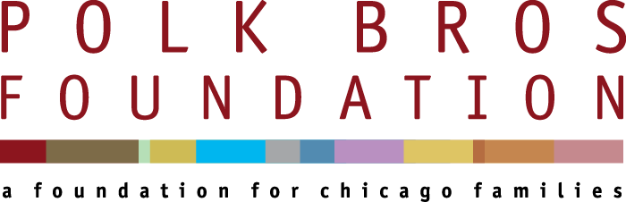

Justice Divided is an educational tool and resource repository meant to promote awareness of disproportionate minority contact (DMC), or the overrepresentation of black youth in the juvenile justice system.
Within the system, the first steps toward equitable justice are acknowledging DMC as a problem of race, accepting joint responsibility, and making a deliberate effort to address its root causes.
Outside the system, we can and should demand these changes from policy makers and practitioners.
This website is intended to facilitate all the above.
The data behind this website are available for download here. Raw source data, as well as recipes for processing it and building a database, are available on GitHub.
DataMade built Justice Divided in partnership with the Illinois Justice Project and Adler University, with funding from the Polk Bros. Foundation.
The Illinois Justice Project advances criminal justice reform through development, advocacy, and implementation oversight of policies that make communities safer, break the cycle of crime and violence, and make the justice system more effective, equitable, and efficient.
ILJP concentrates on three key intervention points with these goals:
Established in 2014 as a legacy project of Metropolis Strategies, the non-profit ILJP is a supporting organization of the Chicago Community Trust and an affiliate of The Commercial Club of Chicago.
Adler University continues the pioneering work of the first community psychologist Alfred Adler by graduating socially responsible practitioners, engaging communities, and advancing social justice.
The Polk Bros. Foundation. seeks to improve the quality of life for the people of Chicago by partnering with organizations that work to reduce the impact of poverty and provide area residents with better access to quality education, preventive health care, and basic human services.
DataMade is a civic technology company in based in Chicago. We build open-source software and stories using public data to make communities, journalists, governments, and advocacy organizations more powerful.
All of the code, data, and analysis on this site is open source and available on GitHub under the open source MIT License.
The site was built with:
The data was processed and analyzed with:
Found a bug? Have a question about the data? Report it in our issue tracker.
Have other feedback or suggestions? Send us an email at info@datamade.us.